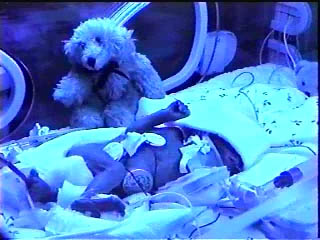

You need to have QuickTime installed to watch this movie. Available from
http://www.apple.com/quicktime
. Poppy is under UV light for her Jaundice treatment, hence the blue colouring. It is not always this quiet in the Intensive Care Unit!
<A HREF="Poppy.mov"> </A>
Back